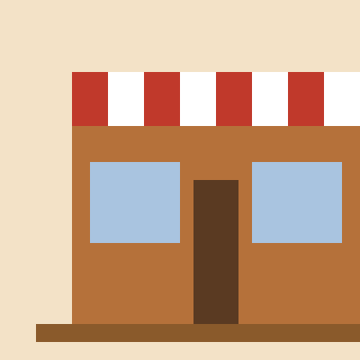

A family bakery in Madrid
The Golden Crumb opened in 2010 as a small family bakery. Our bakers start work at 4:00 in the morning so that the bread is warm when you arrive.
We believe that good bread needs time, patience and love. That is why our dough rests for many hours before it goes into the oven.